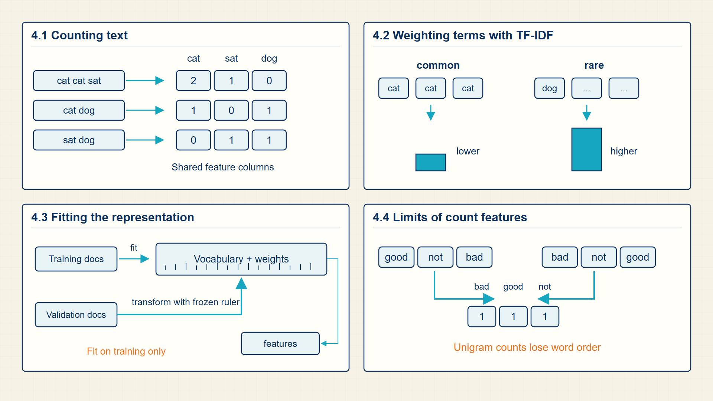
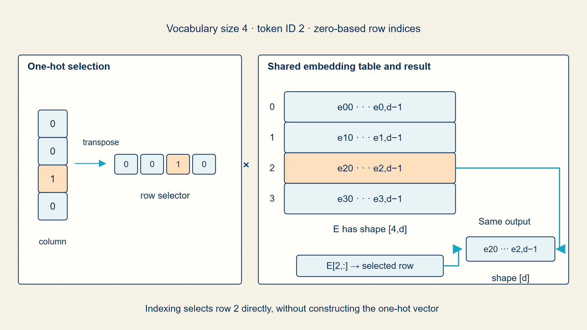
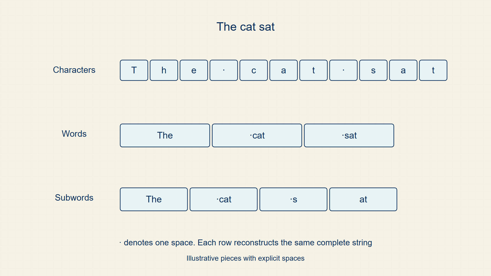

4 Count Vectors & TF-IDF: Extracting Word Frequencies and Their Limits
Before learned embeddings, a document was commonly represented by the words it contained and their counts. Those features still give the clearest route from vocabulary coordinates to a classifier input.
Bag-of-Words and TF-IDF make documents into sparse count vectors. The chapter follows those vectors into a document-term matrix and a linear classifier, then shows why learned dense vectors become useful.
In code, sklearn.feature_extraction.text.CountVectorizer and TfidfVectorizer convert documents into sparse matrices; scipy.sparse keeps large vocabularies practical.
Chapter 4 develops one required stage of the guide’s computation.

The numbered panels correspond to the chapter sections and show how each local result supplies the next operation.
4.1 Extracting Term Frequencies with Bag-of-Words and TF-IDF
Before neural embeddings, text can be represented by counted symbolic patterns. N-grams and bag-of-words features turn text into numbers while ignoring much of its long-range structure.
- N-gram: A contiguous sequence of n tokens.
- Bag of words: A vector representation that records token counts or weights without order.
- Count vector: A sparse vector whose coordinates correspond to vocabulary items.
An n-gram language model estimates the next token from a short history. It is interpretable and easy to implement, but it suffers from sparsity because many possible n-grams are rare or unseen.
Bag-of-words features are useful for simple text classification. They discard order, so they cannot represent syntax or long dependencies, but they make logistic regression and linear classifiers practical.
Classical text features make the representation step explicit. A document becomes a vector whose coordinates refer to vocabulary items or n-grams.
A vectorizer fixes a column for every retained word or n-gram and applies the same column order to every document. Fitting learns the vocabulary from training text; transforming counts or weights features without changing that vocabulary. Validation and test text must use the training vocabulary so columns keep the same meaning.
The resulting matrix is usually sparse because each document contains only a small fraction of the vocabulary. Linear models exploit this representation directly: one learned weight is attached to each feature column.
Count features are useful because they expose the link between vocabulary design and a model input coordinate. A bag-of-words vector gives every vocabulary item its own column; an n-gram vector does the same for short ordered sequences, so it preserves a limited amount of local word order.
These representations are deliberately sparse and interpretable. The following sections arrange them into a batch matrix and multiply that matrix by classifier weights; later embeddings replace the manually named vocabulary coordinates with learned dense coordinates.
A bag-of-words vector counts how often vocabulary item j appears in document d.
Bag-of-words count:
\[ \operatorname{BoW}(d)_j=\operatorname{count}(t_j\in d) \tag{4.1}\]
where d is one document; j is vocabulary coordinate; \(t_{j}\) is the token assigned to coordinate j.
Choose vocabulary coordinate j, scan document d, and increment that coordinate once for every occurrence of token \(t_{j}\). Repeating this for all vocabulary entries produces one fixed-width document vector.
BoW discards order but gives a vector coordinate a clear count-based meaning.
An n-gram feature counts contiguous token sequences rather than single tokens only.
N-gram feature:
\[ \phi_{\mathrm{ngram}}(d)_g=\operatorname{count}(g\in d) \tag{4.2}\]
where d is one document or token sequence; g is one n-gram, such as a bigram or trigram; \(\phi_{ngram}\)(d)_g is count assigned to coordinate g for document d.
Slide an n-token window across the document. Each time the window equals g, increment the coordinate associated with that n-gram.
An n-gram feature preserves evidence that a particular local sequence occurred, but it does not represent relations farther apart than its window.
N-gram probability:
\[ P(w_t\mid w_1,\ldots,w_{t-1})\approx P(w_t\mid w_{t-n+1},\ldots,w_{t-1}) \tag{4.3}\]
where \(w_{t}\) is token predicted at position t; context is the preceding token history.
The n-gram approximation replaces an arbitrarily long history with the most recent n-1 tokens.
The estimate is interpretable but assigns zero probability to unseen histories unless smoothing is added.
Example: Counting Words and Short Phrases
Bag-of-words count:
If d = ‘cat sat cat’ and \(t_{j}\) = ‘cat’, then \(BoW(d)_{j} = 2\).
N-gram feature:
If the bigram ‘new york’ appears twice in a document, \(\phi_{ngram}\)(d) for that bigram is 2.
N-gram probability:
If \(\operatorname{count}(context, next)=3\) and \(\operatorname{count}(context)=10\), the unsmoothed estimate is 0.3.
Code example: Count and TF-IDF matrices with a fixed training vocabulary
from sklearn.feature_extraction.text import CountVectorizer, TfidfVectorizer
documents = ["cat sat", "dog sat", "cat chased dog"]
counts = CountVectorizer(ngram_range=(1, 2))
X_count = counts.fit_transform(documents)
tfidf = TfidfVectorizer(vocabulary=counts.vocabulary_, ngram_range=(1, 2))
X_tfidf = tfidf.fit_transform(documents)
print(counts.get_feature_names_out())
print(X_count.shape, X_tfidf.shape)
print(X_count.toarray())Both matrices have one row per document and the same feature columns.
The tiny corpus is for inspecting columns, not for comparing classifier quality.
Count features discard word order but expose a direct numeric description of each document. The vocabulary determines the columns of the resulting document-term matrix.
4.2 Constructing Document-Term Matrices for Batch Computation
A document-term matrix places one document on each row and one vocabulary feature on each column, making a corpus compatible with batch matrix multiplication.
- Document-term matrix: A matrix with one row per document and one column per vocabulary feature.
- Sparse matrix: A matrix stored by its nonzero entries because most counts are zero.
- TF-IDF: A weighting that raises terms frequent in a document and lowers terms common across many documents.
The dimensions are the important rule. A linear classifier does not see words; it sees a row vector. The weight vector has the same feature dimension, so the dot product is defined.
The resulting matrix is more than a storage format. Its vocabulary columns define the input coordinates that a classifier weight matrix must accept in the next section.
The shared vocabulary fixes both matrices in the next multiplication. If X has dimensions [B, |V|], then the classifier weight matrix must have |V| rows so each vocabulary feature aligns with one learned coefficient for every class.
Sparse storage avoids allocating the many zero counts in X. The mathematical multiplication is unchanged: each document-class score is the weighted sum of the nonzero vocabulary features in that document.
Classical text classification stores N documents as rows and vocabulary features as columns.
Feature batch:
\[ X\in\mathbb{R}^{N\times\lvert V\rvert} \tag{4.4}\]
where N is number of documents; |V| is number of feature coordinates.
Construct one vocabulary-feature vector for each document, then stack those vectors as rows. Every row has |V| coordinates because all documents are measured against the same vocabulary.
Matrix dimensions determine which weight vectors can multiply the feature batch.
TF-IDF combines within-document frequency with inverse document frequency.
TF-IDF:
\[ \mathrm{tfidf}_{d,j}=\mathrm{tf}_{d,j}\log\left(\frac{N}{\mathrm{df}_j}\right) \tag{4.5}\]
where \(tf_{d,j}\) is term frequency in document d; \(df_{j}\) is document frequency; N is number of documents.
The term-frequency factor measures local evidence in one document; the inverse-document-frequency factor downweights terms that appear in many documents.
a term becomes large when it is frequent in this document and relatively rare across the corpus.
Example: Feature batch
For 10 documents and a 500-word vocabulary, X has dimensions 10 x 500.
Example: TF-IDF
If \(tf = 3\), \(N = 100\), and \(df = 10\), then \(tfidf = 3 \log(10)\).
Each matrix row represents one document and each column represents one vocabulary feature. A classifier applies one set of learned class weights to every row at once.
4.3 Scoring Text Classes with Sparse Linear Classifiers
A document-term matrix becomes a classifier input when each vocabulary column is aligned with a learned class weight. Matrix multiplication then produces one score for every document and class.
- Class-weight matrix: A matrix with one row per vocabulary feature and one column per output class.
- Score matrix: The batch of class logits produced before sigmoid or softmax.
Each document is one row of X, and each column of X records one vocabulary feature such as a count or TF-IDF weight. The matching row of W stores how that feature contributes to each class score.
For one document and one class, the calculation is a dot product between the document row and one class-weight column. Stacking B documents and K class columns performs all B by K dot products in one matrix multiplication.
The vocabulary therefore fixes the input width of the classifier. Changing the vocabulary or feature construction changes the columns of X and requires a compatible weight matrix W.
The output Z contains logits. Chapter 5 interprets these scores as linear predictions and decision boundaries before Chapter 6 converts classification logits into probabilities.
The feature axis of X must match the vocabulary axis of W.
Vocabulary features to class scores:
\[ Z=XW+b,\quad X\in\mathbb{R}^{B\times\lvert V\rvert},\quad W\in\mathbb{R}^{\lvert V\rvert\times K},\quad b\in\mathbb{R}^{K},\quad Z\in\mathbb{R}^{B\times K} \tag{4.6}\]
where B is number of documents in the batch; |V| is number of vocabulary features; K is number of output classes; Z is class-logit matrix.
For every document b and class k, the entry \(Z_{b,k}\) is the dot product of document row \(X_{b}\) with class-weight column \(W_{:,k}\), followed by the class bias \(b_{k}\).
The shared vocabulary dimension is consumed by the dot products; the batch and class dimensions remain in the output.
Example: Vocabulary features becoming class scores
Two documents use three vocabulary features and are scored for two classes.
Inputs:
\(X = [[2, 1, 0], [0, 1, 3]]\)
\(W = [[0.5, -0.2], [1.0, 0.4], [-0.5, 0.8]]\)
\(b = [0.1, -0.1]\)
First document:
\(z_{1,1} = 2(0.5) + 1(1.0) + 0(-0.5) + 0.1 = 2.1\)
\(z_{1,2} = 2(-0.2) + 1(0.4) + 0(0.8) - 0.1 = -0.1\)
Second document:
\(z_{2,1} = 0(0.5) + 1(1.0) + 3(-0.5) + 0.1 = -0.4\)
\(z_{2,2} = 0(-0.2) + 1(0.4) + 3(0.8) - 0.1 = 2.7\)
Result:
\(Z = [[2.1, -0.1], [-0.4, 2.7]]\)
Dimensions:
X: [2,3]
W: [3,2]
b: [2]
Z: [2,2]
Each output row contains the two class logits for one document.
Code example: Vocabulary-feature batches mapped to class logits
import torch
# Rows are documents; columns are vocabulary features.
X = torch.tensor([[2.0, 1.0, 0.0], [0.0, 1.0, 3.0]])
W = torch.tensor([[0.5, -0.2], [1.0, 0.4], [-0.5, 0.8]])
b = torch.tensor([0.1, -0.1])
# Matrix multiplication computes every document-class dot product.
Z = X @ W + b
expected = torch.tensor([[2.1, -0.1], [-0.4, 2.7]])
assert Z.shape == (2, 2)
assert torch.allclose(Z, expected)The result is \(Z = [[2.1, -0.1], [-0.4, 2.7]]\) with dimensions [2, 2], one row per document and one column per class.
The example uses a dense tensor for readability. A realistic bag-of-words matrix is usually sparse and may require a sparse-compatible operation.
The resulting class scores are logits: unnormalized evidence for each class. The next part explains how a linear rule produces such scores and how probability functions turn them into decisions.
4.4 Overcoming the Limits of Sparse Orthogonal Counts
A dense learned representation replaces vocabulary-count coordinates with a smaller set of trainable coordinates that can be transformed by neural layers.
- Sparse representation: A high-dimensional vector with many zeros, often tied directly to token identity.
- Dense representation: A lower-dimensional vector whose coordinates are learned features.
Sparse features are transparent: one coordinate can mean one token. Dense features are less directly interpretable but can place related words or sentences near each other in vector space.
Module 2 moves from count features to embeddings because sequence and transformer models need dense vectors that can be composed by neural layers.
Dense vectors prepare the next step even when they come from classical feature construction. Embeddings replace hand-designed sparse coordinates with trainable rows that can move under gradient descent.
A dense coordinate does not correspond to one named word. Its meaning is distributed across training examples, and gradient descent changes it whenever the representation helps or harms the objective.
Embedding tables begin with one dense row per token ID. Sequence models then combine those rows across positions, so the dense representation is both a data structure and the input on which recurrence or attention operates.
Computation map
The computation starts with raw text and produces model layers through the intermediate objects shown below.

The output of raw text is the input required by model layers; the intermediate stages name the stored objects that make the transition possible.
Sparse count vectors treat different vocabulary entries as unrelated coordinates. Learned embeddings replace those fixed coordinates with vectors whose values can change during training.
4.5 Visualizing Sparse Text Features and Document Matrices
Sparse feature arrays and class-score matrices share the vocabulary axis.
Classical text features depend on the unit counted. Character, word, and subword choices change the vocabulary coordinates before BoW or TF-IDF is computed.

The feature vector is only meaningful after the counted unit is fixed. This is why tokenization and feature construction must be read together.
Classical text features show how language becomes vectors and matrices before neural embeddings appear.
Linear prediction maps those vectors to numeric scores.